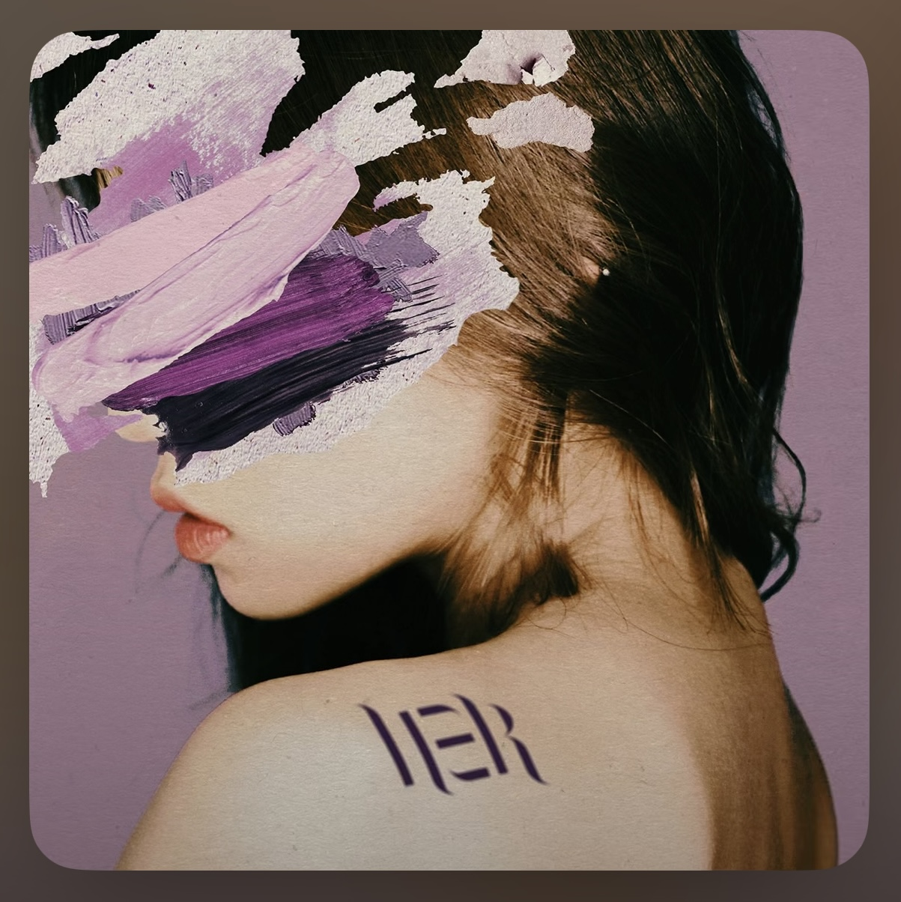
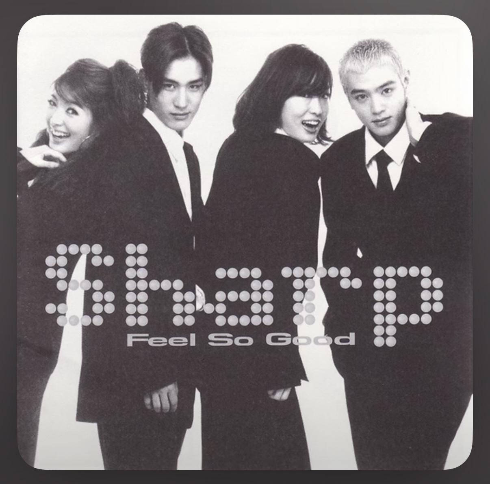

```html
<!DOCTYPE html>
<html lang="ko">
<head>
    <meta charset="UTF-8">
    <meta name="viewport" content="width=device-width, initial-scale=1.0">
    <title>시원한 바다 느낌 노래 추천</title>
    <!-- 여기 파일명이 ocean.css 여야 합니다 -->
    <link rel="stylesheet" href="ocean.css">
</head>
<body class="ocean">

    <h1 class="page-title">시원한 바다 느낌 노래 3곡</h1>

    <div class="song-list">

        <!-- 1번 노래: DPR LIVE -->
        <div class="song-item">
            
            
            <div class="info">
                <h2>DPR LIVE – Martini Blue</h2>
                <p>몽환적이면서도 바다의 깊은 푸르름이 느껴지는 곡.</p>
                <a class="go-btn" href="https://www.youtube.com/watch?v=czftJ7E7wa4" target="_blank">듣기</a>
            </div>
        </div>

        <!-- 2번 노래: TXT -->
        <div class="song-item">
            

            <div class="info">
                <h2>투모로우바이투게더 – 그냥 괴물을 살려두면 안 되는 걸까</h2>
                <p>파란 계열의 강렬한 분위기와 감성적 메시지가 어우러진 곡.</p>
                <a class="go-btn" href="https://www.youtube.com/watch?v=ok5L_QxT1Vc" target="_blank">듣기</a>
            </div>
        </div>

        <!-- 3번 노래: 샵 (Sharp) -->
        <div class="song-item">
            

            <div class="info">
                <h2>샵 – Sweety</h2>
                <p>맑고 시원한 청량감이 느껴지는 2000s 감성 노래.</p>
                <a class="go-btn" href="https://www.youtube.com/watch?v=QHa6RdqCwKU" target="_blank">듣기</a>
            </div>
        </div>

    </div>

</body>
</html>
```
